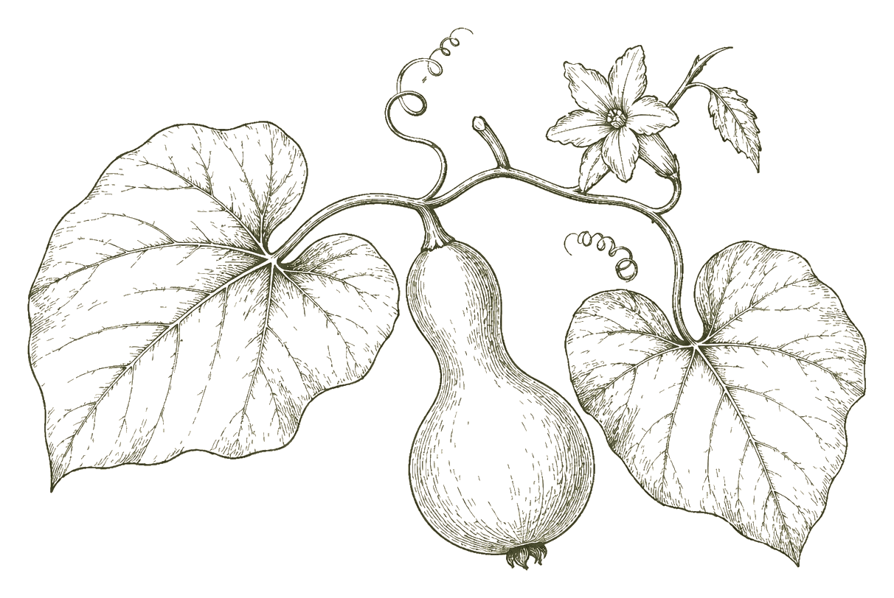
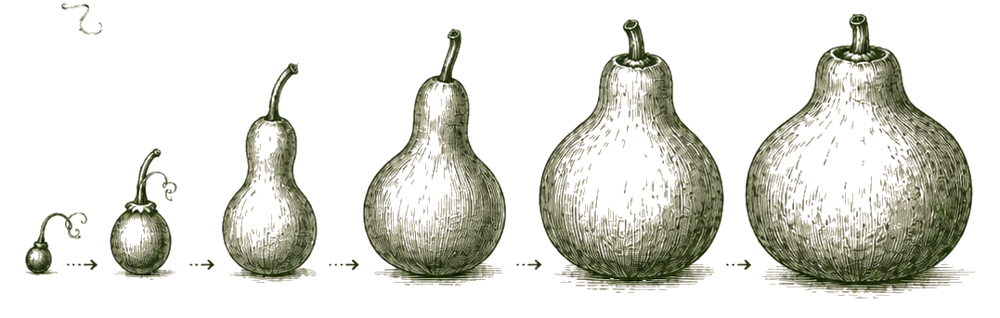
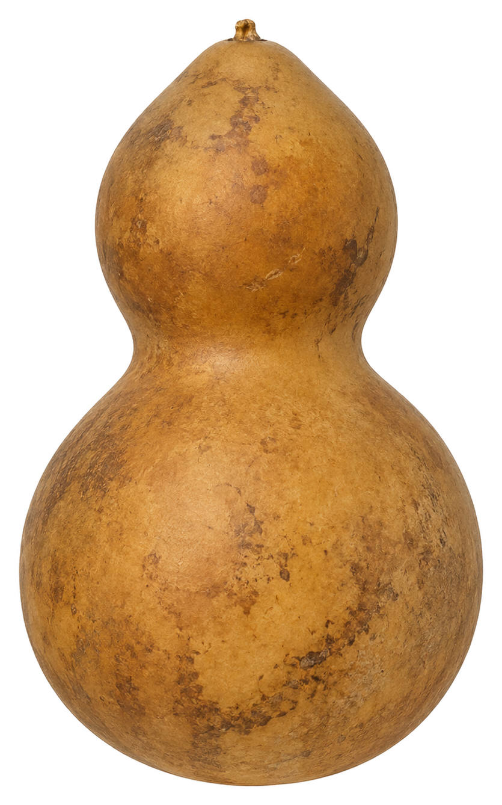
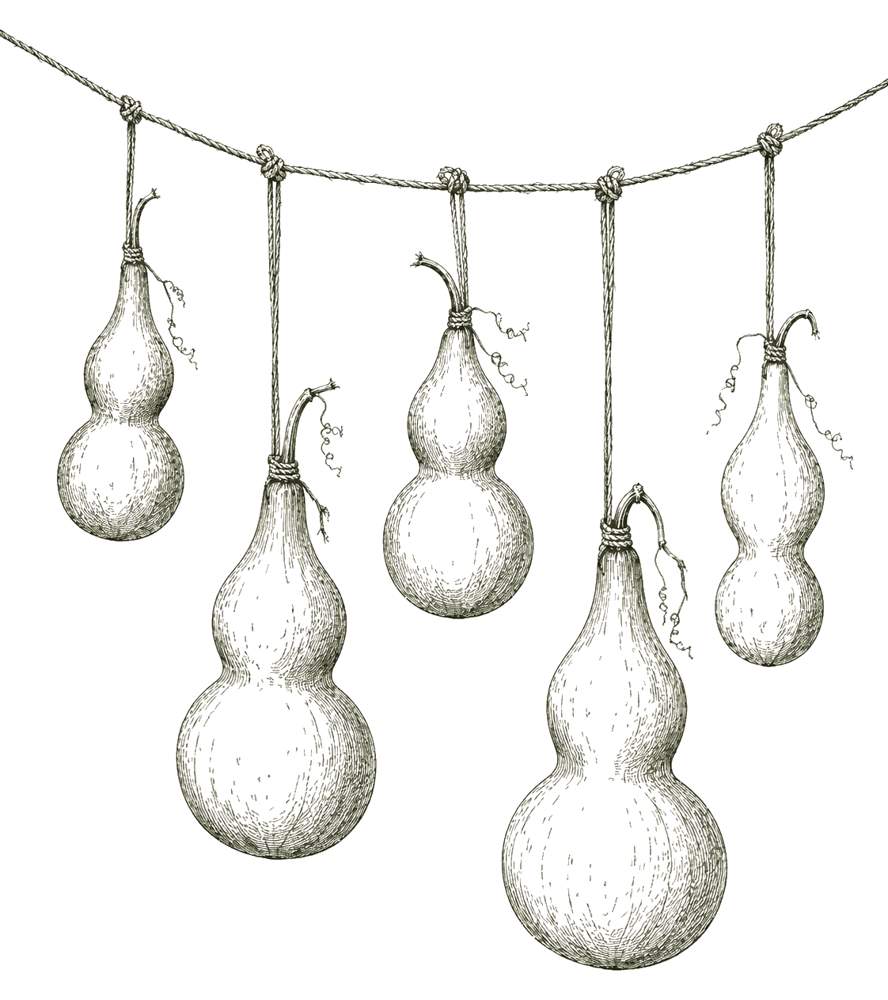
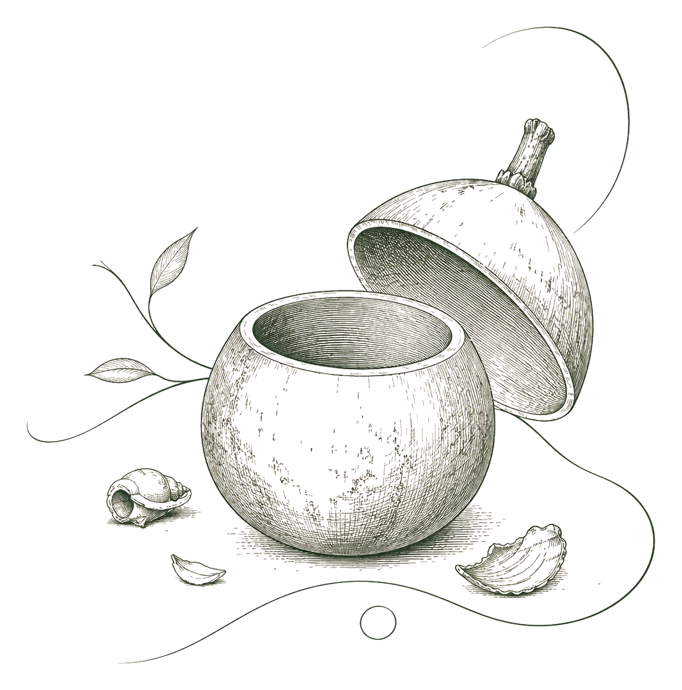
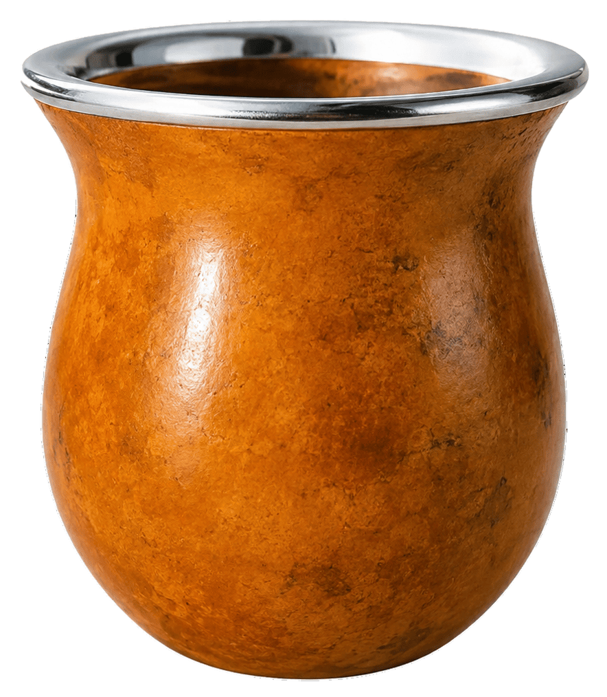

Del porongo natural al mate terminado. Una pieza hecha con tiempo, oficio y origen.
Conocé el procesoEl Origen de la Calabaza
Cultivo del porongo
El mate nace del cultivo del porongo, una calabaza natural que crece durante meses al sol hasta desarrollar su forma y resistencia.


Maduración natural
El fruto permanece en la planta hasta madurar completamente, endureciendo su cáscara de manera natural.

Cosecha y secado
Una vez listo, el porongo se cosecha y atraviesa un proceso de secado lento que permite conservar su durabilidad y carácter único.


Origen del mate
Tras el secado, la calabaza queda preparada para convertirse en la base del mate tradicional, manteniendo intacta su esencia natural.
La importancia del mate
En Uruguay el mate está en todo lugar y momento — en la mañana, en la tarde, en la noche. Acompaña charlas, silencios, momentos en compañía, en soledad. Une generaciones y comparte nuestra cultura.
La primera vez no se entiende, la segunda no se comparte, y después ya es parte de todos los días.

Calabaza curada. La forma más antigua de tomar mate.
¿Querés vender JIcrea?
Trabajamos con supermercados, agroveterinarias, ferreterías, estaciones de servicio y muchos comercios más en todo Uruguay. Stock permanente, entregas regulares y atención directa.
-
Stock permanente
Producción continua para garantizar disponibilidad todo el año.
-
Catálogo completo
Más de 50 productos para elegir según el perfil de tu local.
-
Atención directa
Un referente comercial dedicado a tu cuenta.